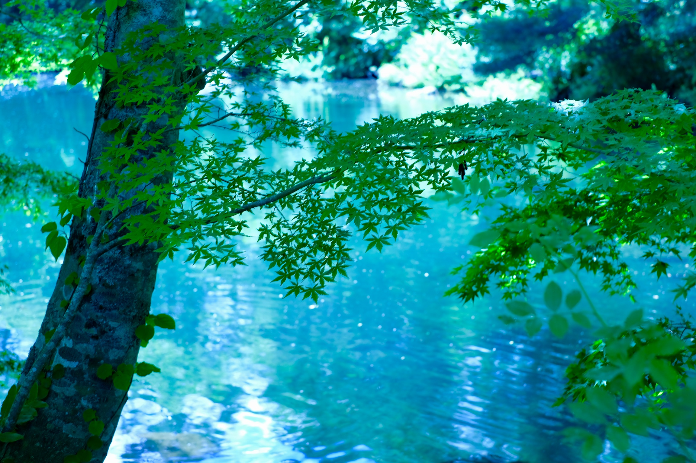
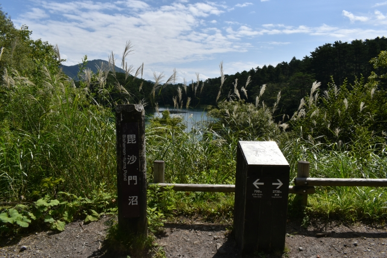

Goshikinuma Ponds
Mysterious lake "Goshikinuma"
Goshikinuma Ponds has a 1-Star rating in the Michelin Green Guide of 2016.
The Goshikinuma Pond group is a group of lakes and ponds which include Bishamonnuma, Akanuma, Midoronuma, Tatsunuma, Bentennuma, Rurinuma, Aonuma and Yanaginuma.
It is said that the "mysterious lake" is a place where the colours of emerald green, cobalt blue, turquoise blue, emerald blue, and pastel blue differ depending on the swamp. Aonuma in particular has such a beautiful colour that it is hard to believe as something created by nature.
The name, Goshikinuma, as written in Japanese (Five colour ponds), is rather a misnomer. The area consists of many more than five ponds, and is also famous for displaying a much larger spectrum of spectacular colours. Factors such weather, season, angle of view, volcanic substances contained in the water, etc can affect the colours that you see.
You can enjoy rowboats at the biggest pond, Bishamonnuma.
Birds are best observed after the winter thaw but before new sprouting, as well as after the falling of the leaves.
In spring after the snow melts, the colours of the lakes and ponds are particularly beautiful.
Goshikinuma Pond trail
The Goshikinuma Pond trail is about 3.6 km in length and it takes about 70 to 90 minutes one way. It is a relatively flat hiking course.
Although it is a course with few ups and downs, caution is still necessary as rocks can be slippery and it can get muddy in rainy weather.
This area is designated as a "special protected area" in the national park (especially in areas that strictly protect the landscape), and any collection of animals and plants is prohibited. In order to help protect vegetation, please keep to established trails.
There are two entrances to the trail, each with a parking lot and a bus stop.
When coming by car, you can park at one parking lot, walk one way along the trail, and return to your car by bus.
(As the number of buses is limited, we recommend checking the timetable in advance.)
The formation of Goshikinuma
In 1888, the summit of Mount Bandai on the northern side collapsed due to a steam explosion. The subsequent rock avalanche blocked the river and this led to the formation of lakes in this area. There are dozens of lakes, among them Goshikinuma lake group.
Access

There are two entrances to the trail, each with a parking lot and a bus stop.
By Car: Use the Urabandai Visitor Center, or Goshikinuma Entrance Tourist Plaza (Urabandai Tourist Association) parking lot. It is about 5 minutes on foot to Bishamonnuma. There is also a large bus parking area there.
By Bus: Get off at "Goshikinuma Iriguchi" bus stop.
By Car: Use the Urabandai Bussankan parking lot. Yanaginuma Pond is in front of the parking lot. There is also a large bus parking area there.
By Bus: Get off at "Urabandai Kogen-eki" bus stop.
Nearby attractions
Museum
Morohashi Museum of Modern Art
This museum contains largest collection of the works of Salvador Dalí in Asia.